6
聚类和无监督模型
在这一章中，我们将介绍一些基本的聚类算法，并讨论它们的优缺点。无监督学习领域，以及任何其他机器学习方法，必须始终基于奥卡姆剃刀的概念。只要模型的性能满足您的要求，简单总是首选。
然而，在这种情况下，地面真相可能是未知的。当采用聚类算法作为探索工具时，我们只能假设数据集代表精确的数据生成过程。如果这个假设是正确的，那么最好的策略是确定集群的数量，以最大化内部的内聚性(密集性)和外部的分离性。这意味着我们期望找到其样本共享一些共同和部分独特特征的斑点(或小岛)。
具体来说，我们将要分析的算法和主题是:
- K-最近邻 ( KNN )，基于 k 维 ( k-d )树和球树
- K-means 和 k-means++
- 聚类模型的评估
我们现在可以开始分析一种最简单的数据聚类方法，考虑利弊以及如何改进结果。
K-最近邻
这个算法属于一个被称为基于实例的算法的特殊家族(方法论被称为基于实例的学习)。
它不同于其他方法，因为它不与实际的数学模型一起工作。相反，推断是通过新样本与现有样本(被定义为实例)的直接比较来执行的。KNN 是一种很容易用来解决聚类、分类和回归问题的方法(尽管在这种情况下，我们只考虑第一种技术)。聚类算法背后的主要思想非常简单。让我们考虑一个数据生成过程pT16】data 并限定一个从该分布中提取的数据集:
每个点的维数等于 N 。我们现在可以引入一个距离函数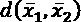，在大多数情况下，它可以用闵可夫斯基距离来概括:
当 p = 2 时，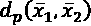代表经典欧几里德距离，这通常是几乎任何场景中的默认选择。在特殊情况下，使用其他变量可能会有所帮助，例如 p = 1(也称为曼哈顿距离)或 p > 2。即使度量函数的所有属性保持不变，不同的值 p 会产生语义上不同的结果。例如，我们可以将点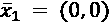和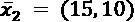之间的距离视为 p 的函数:
(0，0)和(15，10)之间的闵可夫斯基距离作为参数 p 的函数
距离随 p 单调递减，当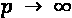时收敛到最大分量绝对值差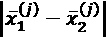。因此，每当为了获得一致的度量而以相同的方式对所有组件进行加权很重要时，较小的 p 值是优选的(例如， p = 1 或 2)。阿格沃尔、欣内堡和凯米(在阿格沃尔 C. C .，欣内堡 a .，凯米 D. A .，关于高维空间中距离度量的惊人行为，ICDT，2001)也研究并形式化了这个结果，他们证明了一个基本不等式。
如果我们考虑 M 点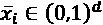的一般分布 G ，一个基于LT7】p 范数的距离函数，以及从 G 和原点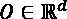引出的两点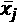和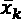之间的最大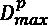和最小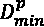距离(使用Lp范数计算),则以下不等式成立:
. In the snippet, the case of d =5, 10, 15, 20 is analyzed with Minkowski metrics with P = 1, 2, 5, 10 (the final values depend on the random seed and how many times the experiment is repeated):
import numpy as np
from scipy.spatial.distance import pdist
nb_samples = 100
nb_bins = 100
def max_min_mean(p=1.0, d=2):
Xs = np.random.uniform(0.0, 1.0,
size=(nb_bins, nb_samples, d))
pd_max = np.zeros(shape=(nb_bins,))
pd_min = np.zeros(shape=(nb_bins,))
for i in range(nb_bins):
pd = pdist(Xs[i], metric='minkowski', p=p)
pd_max[i] = np.max(pd)
pd_min[i] = np.min(pd)
return np.mean(pd_max - pd_min)
按 p 分组的最大和最小闵可夫斯基距离之间的平均差
上述不等式的一个直接结果是，当分量之间的最大绝对差决定了距离的最重要因素时，可以采用大值的 p 。比如我们考虑三点: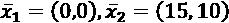，和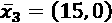，那么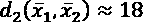，和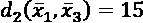。因此，如果我们在以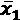为中心的 d = 16 处设置阈值，则点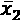在边界之外。如果取而代之的是 p = 15，两个距离都变得接近 15，并且两个点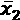和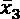都在边界内。当考虑组件间的不均匀性很重要时，大值的 p 的一个特殊用途。
例如，一些特征向量可以代表一组人的年龄和身高。考虑一个测试人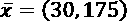，在 p 值较大的情况下， x 与两个样本(35，150)和(25，151)的距离几乎相同(约 25.0)，唯一的主导因素变成了身高差(与年龄无关)。
KNN 算法确定与每个训练点最接近的 k 个样本。当出现新的样品时，用两种可能的变体重复该程序:
- 使用预定义的值 k ，计算 KNN。
- 使用预定义的半径/阈值 r ，计算距离小于或等于半径的所有邻居。
KNN 的哲学是相似的样本可以共享它们的特征。例如，推荐系统可以使用这种算法对用户进行聚类，并在给定新用户的情况下，找到最相似的用户(例如，根据他们购买的产品)来推荐同一类别的商品。一般来说，相似度函数被定义为距离的倒数(也有一些例外，比如余弦相似度，它对 p 的任何值都有效):
被归类为邻居的两个不同的用户 A 和 B ，在某些观点下会有所不同，但同时会共享一些奇特的特性。这一陈述授权我们通过提出差异来增加同质性。比如 A 喜欢的书BT63】1 和 B 喜欢的书B2 我们可以推荐BT73】1 到 B 和BT79】2如果我们的假设是正确的，那么 A 和 B 之间的相似性就会增加；否则，这两个用户将转向更好地代表他们行为的其他集群。
不幸的是，普通算法(在 scikit-learn 中，它被称为强力算法)在大量样本的情况下会变得非常慢，因为它需要计算所有的成对距离才能回答任何查询。用 M 点，这个数等于MT5】2，这往往是不可接受的(如果M= 1000，每个查询需要计算一百万个距离)。更准确地说，由于 N 维空间中距离的计算需要 N 次运算，所以总复杂度变为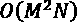，这仅对于 M 和 N 的小值才是合理的。这就是为什么一些重要的策略，如 k-d 树和球树，已经被实现来降低计算复杂度。
K-d 树
因为所有的 KNN 查询都可以被认为是搜索问题，所以降低整体复杂性的最有效的方法之一就是将数据集重新组织成树形结构。在二叉树(一维数据)中，一个查询的平均计算复杂度是 O (log M )因为我们假设我们在每个分支中拥有几乎相同数量的元素(如果树是完全不平衡的，那么所有的元素都是顺序插入的，得到的结构只有一个分支，所以复杂度变成了 O ( M )。总的来说，真实的复杂度因为树的不平衡性而略高于 O (log M )，但操作总是比香草搜索高效得多，香草搜索是O(M2)。
然而，我们通常处理 N 维数据，不能立即使用以前的结构。K-d 树为NT75】1 扩展了二叉树的概念。在这种情况下，不能立即执行剥离，必须选择不同的策略。解决这个问题最简单的方法是在每个级别(1、2、…、 N )选择一个特征，并重复这个过程，直到达到所需的深度。在下图中，有一个带有三维点的 k-d 树的示例:
三维 k-d 树示例
根是点(5，3，7)。考虑到第一个特征，执行第一次分割，因此两个子代是(2，1，1)和(8，4，3)。第二个对第二个特征进行操作，依此类推。平均计算复杂度为O(NlogM)，但是如果分布非常不对称，树变得不平衡的概率非常高。为了缓解这一问题，可以选择与(子)数据集的中值相对应的特征，并继续按照这一标准进行分割。这样就保证了树的平衡。然而，平均复杂度总是与维数成正比，这可能会极大地影响性能。
例如，如果M= 10000， N = 10，用 log 10 x ，O(NlogM)=O(40)，而用N= 1000，则复杂度变为通常，k-d 树遭受维数灾难，当 N 变大时，平均复杂度大约为 O ( MN )，这总是比普通算法好，但是对于实际应用来说通常太昂贵。因此，k-d 树只有在维数不是很高时才真正有效。在所有其他情况下，拥有不平衡树的概率和由此产生的计算复杂性建议采用不同的方法。
球树
球树提供了 k-d 树的另一种选择。这个想法是以一种对高维样本几乎不敏感的方式重新排列数据集。球被定义为一组点，这些点与中心样本的距离小于或等于固定半径:
从第一个主球开始，可以构建嵌套在父球中的更小的主球，并在达到所需深度时停止该过程。一个基本条件是一个点可以永远属于一个球。这样，考虑到 N 维距离的代价，计算复杂度为 O ( N log M )并且不会遭受 k-d 树所遭受的维数灾难。该结构基于超球，其边界由以下方程定义(给定中心点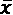和半径RT9】I):
因此，找到正确球所需的唯一操作是测量样品和从最小球开始的中心之间的距离。如果一个点在球的外面，就需要向上移动并检查父点，直到找到包含样本的球。
在下图中，有一个两层球树的例子:

具有七个二维点和两层的球树的例子
在本例中，七个二维点首先被分成两个球，分别包含三个点和四个点。在第二层，第二个球再次被分成两个更小的球，每个球包含两个点。这个过程可以重复，直到达到一个固定的深度，或者通过施加一个叶子必须包含的最大数量的元素(在这种情况下，它可以等于 3)。
拟合 KNN 模型
k-d 树和球树都可以是降低 KNN 查询复杂性的有效结构。然而，在拟合模型时，考虑参数 k 和最大树深度是很重要的，参数通常代表查询中计算的邻居的平均数或标准数。这些特定的结构不用于常见的任务(例如排序)，并且当所有被请求的邻居可以在相同的子结构中被找到时，它们的效率被最大化(大小为K<T31】M以避免隐式退回到普通算法)。换句话说，树的作用是通过将搜索空间划分成合理的小区域来减少搜索空间的维数。
同时，如果包含在一个叶子中的样本数量很少，则树节点的数量增加，并且复杂性随之增加。负面影响是双倍的，因为平均来说需要探索更多的节点，并且如果 k 远大于一个节点中包含的元素数量，则需要合并属于不同节点的样本。另一方面，每个节点非常大量的样本会导致接近普通算法的情况。
例如，如果M= 1000，并且每个节点包含 250 个元素，一旦计算出正确的节点，要计算的距离的数量与初始数据集大小相当，并且通过采用树结构不会获得真正的优势。一个可接受的实践是将一个叶子的大小设置为等于平均值 k 的 5 到 10 倍，以最大化找到同一叶子内所有邻居的概率。然而，为了找到最合适的值，必须分析每个特定的问题(同时也对性能进行基准测试)。如果需要不同的 k 值，考虑查询的相对频率是很重要的。例如，如果一个程序需要 10 个 5-NN 查询和 1 个 50-NN 查询，那么最好将叶子大小设置为 25，即使 50-NN 查询的开销会更大。事实上，为第二个查询设置一个好的值(例如，200)会极大地增加前 10 个查询的复杂性，从而导致性能下降。
在这种情况下，我们将 KNN 作为一种无监督算法来讨论。然而，它也可以在回归和分类场景中使用。前面几节讨论的大多数概念也适用于需要监督的问题。特别是，由于邻域代表均匀域，少量的邻域导致非常低的偏差，因为给定一个测试样本，在计算标签(分类或连续)时采用的值是最相似的样本点。显然，如此低的偏差是内在过拟合的结果，这导致了自然的大方差。这个问题可以通过选择更大的社区来缓解。
这种解决方案是一种正则化，因为精度的损失与数据集的隐式受控线性化直接相关。另一方面，较大的邻居在计算上更昂贵，因此它们的大小经常(并且错误地)减小。在我们的背景下，我们总是在不考虑偏差-方差权衡的情况下做出决策，因为这些场景是无人监督的。但是，请读者记住，基于实例的方法通常比参数方法更难管理，因为获得合成模型的优势不存在，并且预测受到数据集结构(包括噪声点和异常值)的强烈影响。
我们现在可以使用 scikit-learn API 创建一个完整的 Python 示例。
KNN 使用 scikit-learn 的示例
为了测试 KNN 算法，我们将使用由 scikit-learn 直接提供的 MNIST 手写数字数据集。它由 1，797 幅 8 × 8 灰度图像组成，代表从 0 到 9 的数字。
第一步是加载它，并将所有值规范化为介于 0 和 1 之间:
import numpy as np from sklearn.datasets import load_digits digits = load_digits() X_train = digits['data'] / np.max(digits['data'])
字典“digits”包含图像digits['images']和展平的 64 维数组digits['data']。Scikit-learn 实现了不同的类(例如，可以使用KDTree和BallTree类直接处理 k-d 树和球树)，这些类可以在 KNN 的上下文中使用(作为聚类、分类和回归算法)。然而，我们将使用主类NearestNeighbors，它允许我们根据邻居的数量或以样本为中心的球的半径来执行聚类和查询:
from sklearn.neighbors import NearestNeighbors
knn = NearestNeighbors(n_neighbors=50,
leaf_size=30,
algorithm='ball_tree')
knn.fit(X_train)
我们已经选择了默认的邻居数量等于 50，以及基于球树的算法。叶片尺寸(leaf_size)参数保持默认值，等于30。我们也采用了默认的度量(欧几里德度量)，但是可以使用 metric 和 p 参数(这是闵可夫斯基度量的顺序)来改变它。Scikit-learn 支持 SciPy 在scipy.spatial.distance包中实现的所有度量(由于并非所有度量都与 k-d 树和球树兼容，我邀请读者查看 scikit-learn 的官方文档)。然而，在大多数情况下，如果结果对于任何数量的邻居都不可接受，则使用闵可夫斯基度量并调整 p 的值就足够了。当相似性不受欧几里德距离影响，而仅受指向样本的两个向量之间的角度影响时，可以使用其他度量，例如余弦距离。使用这种度量的应用包括，例如，用于自然语言处理的深度学习模型，其中单词被嵌入到特征向量中，该特征向量的语义相似度与其余弦距离成比例。
一般来说，当维度很高时，余弦距离是一个有效的选择，但我邀请读者仔细评估每一个场景，以做出最合适的决定。
我们现在可以查询该模型，以便找到样本的 50 个邻居。出于我们的目的，我们选择了索引为 100 的样本，它代表 4(图像的分辨率非常低，但总是可以区分数字):
用于查询 KNN 模型的样本数字
可以使用实例方法kneighbors来执行查询，该方法允许指定邻居的数量(n_neighbors参数——默认值是在类的实例化过程中选择的值)以及我们是否想要获得每个邻居的距离(return_distance参数)。在这个例子中，我们还对评估邻居离中心有多远感兴趣，所以我们设置return_distance=True:
distances, neighbors = ( knn.kneighbors(X_train[100].reshape(1, -1),
return_distance=True))
print(distances[0])
前面代码片段的输出是:
[ 0. 0.91215747 1.16926793 1.22633855 …
第一个邻居总是中心，所以它的距离是 0。其他的从 0.9 到 1.9 不等。考虑到在这种情况下，最大可能距离是 8(64 维向量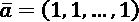和零向量之间)，结果可能是可接受的。为了得到确认，我们可以将邻居绘制成二维 8 × 8 数组(返回的数组neighbors，包含样本的索引)。
结果如下图所示:
KNN 模式选出的 50 个邻居
正如可能看到的，没有错误，但所有的形状略有不同。特别是最后一个，也是最远的，有很多白色像素(对应值 1.0)，解释了距离等于约 2.0 的原因。我邀请读者测试一下radius_neighbors方法，直到结果中出现虚假值。在 Olivetti 人脸数据集上尝试这种算法也很有趣，它的复杂性更高，并且更多的几何参数会影响相似性。
在本节中，我们已经讨论了与 KNN 相关的主要概念，将注意力集中在优点和缺点上。我们现在可以转到另一个常见的聚类算法，K-means。我们将讨论它的局限性以及如何调整超参数以获得最佳性能。
K-means
当我们讨论高斯混合算法时，我们将其定义为软 K-means。原因是每个聚类由三个元素表示:均值、方差和权重。每个样本总是以高斯分布提供的概率属于所有聚类。当可以将概率作为权重进行管理时，这种方法非常有用，但在许多其他情况下，最好是为每个样本确定一个聚类。
这种方法被称为硬聚类，K 均值可以被认为是高斯混合的硬版本。事实上，当所有方差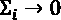时，分布退化为狄拉克δ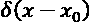，其代表以特定点为中心的完美尖峰(即使它们不是实函数而是分布)。在这种情况下，确定最合适的聚类的唯一可能性是找到样本点和所有中心之间的最短距离(从现在开始，我们将称它们为质心)。这种方法还基于一个重要的双重原则，在每个聚类算法中都应该考虑这个原则。集群必须设置为最大化:
- 集群内凝聚力
- 簇间分离
这意味着我们期望标记彼此分离得很好的高密度区域。当这不可能时，标准必须试图最小化样本和质心之间的组内平均距离。这个量也称为惯性，定义为:
大惯性意味着低内聚力，因为可能有太多的点属于质心太远的簇。这个问题可以通过最小化之前的数量来解决。然而，寻找全局最小值所需的计算复杂度是指数级的(K-means 属于 NP-hard 问题的类别)。K-means 算法采用的另一种方法，也称为 Lloyd 算法，是迭代的，从选择 k 个随机质心开始(在下一节中，我们将分析一种更有效的方法)并调整它们，直到它们的配置变得稳定。
要聚类的数据集(具有 M 个数据点)表示为:
对质心的初步猜测可能是:
对初始值没有具体的限制。然而，这种选择会影响收敛速度和找到的最小值。
迭代过程将在数据集上循环，计算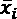和每个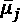之间的欧几里德距离，并根据标准分配一个聚类:
一旦所有的点被聚类，新的质心被计算:
数量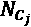代表属于群集 j 的点数。此时，将重新计算惯性，并将新值与之前的值进行比较。该过程将在固定次数的迭代之后或者当惯性的变化变得小于预定阈值时停止。劳埃德算法非常类似于 EM 算法的一个特例。事实上，每次迭代的第一步是计算一个期望值(质心配置)，而第二步是通过最小化惯性来最大化群内凝聚力。
在继续之前，理解惯性的结构和 K-means 继承的局限性是很重要的。让我们假设我们有一个非常密集的斑点和另一个不太密集(并且可能具有更大的方差)的斑点。 S 的内部求和限于分配给每个集群的点数。在我们的例子中，公式变成:
由于 C 密集包含比 C 稀疏大得多的一组点，所以第一项支配总和。因此，当 S 最小化时，找到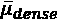最佳位置的可能性很大，但获得全局最优的可能性很小。事实上，由于稀疏斑点对 S 的修改越来越不可忽略，并且算法可能在探索完所有可能性之前停止。当处理这种情况时，一种可能的解决方案是通过引入相同点的 n 个副本来对稀疏斑点进行上采样。这种方法相当于在 S 的计算中引入一组类别权重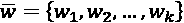，对几何结构的先验知识进行编码；

例如，在前面的场景中，可以选择 w 1 = 1 和 w 2 作为属于 C 密集和 C 稀疏的点的比率(当然，如果在第一次训练之前不知道这一点，可以在分析结果后纳入)。
K-means 也可以用增量方法实现(正式名称为小批量 K-means)。当数据集太大而无法放入内存，并且没有其他可行的解决方案(如 Dask 或 Spark 集群)时，可以对较小的批量应用相同的策略，只需对算法稍加修改。我们并不涵盖这本书的所有细节(它们也可以在 Bonaccorso G .，Hands-On Unsupervised Learning with Python，Packt Publishing，2019)中找到)，但不难理解，主要问题是由于一部分样本不是立即可用的，所以分配不正确。由于这个原因，小批量 K-means 引入了参数化的重新分配策略，以允许使用预定义的灵敏度阈值重新分配点(小值会导致波动，而大值会产生次优的最终配置)。即使该算法没有标准的 K-means 算法精确，也可以证明实际的性能损失通常非常小，因此可以在没有大风险的生产场景中使用。
完整的普通 K-means 算法(即没有任何优化或改进的标准算法)是:
- 设置最大迭代次数 N max
- 设置公差 Thr
- 设置 k 的值(预期簇的数量)
- 用随机值初始化向量 C (0) 。它们可以是属于数据集的点或从合适的分布中取样的
- 计算初始惯性ST59】(0)
- 设置 N = 0
- 而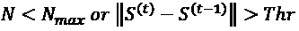:
- N = N + 1
- For 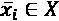:
使用之间的最短距离将分配给一个集群
- 重新计算质心向量C(t)考虑新的赋值
- 重新计算惯性S(t)
算法相当简单直观，很多现实生活中的应用都是基于它的。然而，有两个重要因素需要考虑。第一个是收敛速度。
很容易看出每个初始猜测都趋向于一个收敛点，但是迭代的次数会受到这个选择的显著影响，并且不能保证找到全局最小值。如果初始质心接近最终质心，该算法只需要几步来校正值，但是当选择完全随机时，需要非常高的迭代次数并不罕见。如果有 N 个数据点和 k 个质心，则必须在每次迭代中计算Nk 个距离，从而导致低效的结果。在下一段中，我们将展示如何初始化质心来最小化收敛时间。
另一个重要的方面是，与 KNN 相反，K-means 需要预先定义预期聚类的数量。在某些情况下，这是一个次要问题，因为我们已经知道最合适的 k 值(例如，如果集群的数量是由外部约束定义的，就像在市场细分中一样)。然而，当数据集是高维的并且我们的知识有限时，这种选择可能是危险的。解决这个问题的一个好方法是分析不同数量的集群的最终惯性。由于我们期望最大化集群内的凝聚力，少量的集群将导致惯性增加。我们试图选择低于最大容许值的最高点。理论上我们也可以挑 k = N 。在这种情况下，惯性变为零，因为每个点代表其聚类的质心，但是大值的 k 将聚类场景转换为细粒度的划分，这可能不是捕获一致组的特征的最佳策略。不可能为上限kT27】max 定义一个规则，但是我们假设这个值总是比 N 小很多。最佳选择是选择 k 以最小化惯性，从一组有界值中选择值，例如，在 2 和kT35】max 之间。
即使普通算法非常有效，聚类初始位置的最佳选择也可以加速计算。这就是被称为 K-means++的变体所达到的目的。
K-表示++的意思
我们已经说过，为初始质心选择一个好的可以提高收敛速度，并导致更接近惯性全局最优的最小值。Arthur 和 Vassilvitskii(在 Arthur D .、Vassilvitskii S. 、小心播种的优点、k-means++中:2006 年第十八届 ACM-SIAM 离散算法研讨会会议录)提出了一种称为 K-means++的方法，该方法允许我们考虑最可能的最终配置来提高初始质心猜测的准确性。
为了探索该算法，引入一个函数很有用，它被定义为:
定义每个样本和已经选择的一个质心之间的最短距离。由于该过程是递增的，所以在所有步骤之后必须重新计算该函数。出于我们的目的，让我们也定义一个辅助概率分布(为了简单起见，我们省略了指数变量):
- 考虑已经选择的质心，计算所有的
- 计算
- 以概率从 X 中选择下一个质心
在前述论文中，作者展示了一个非常重要的性质。如果我们将 S * 定义为 S 的全局最优值，则 K-means++初始化将确定实际惯量期望值的上限:
这个条件经常用 K-means++是 O (log k )来表示——竞争性。当 k 足够小时，找到接近全局最小值的局部最小值的概率增加。然而，K-means++仍然是一种概率方法，对同一数据集的不同初始化会导致不同的初始配置。一个好的做法是运行有限次数的初始化(例如，10 次),并选择一个与最小惯性相关的初始化。当训练复杂度不是主要问题时，这个数字可以增加，但是不同的实验表明，当与实际计算成本相比时，通过非常大量的试验可实现的改进是可以忽略的。scikit-learn 中的缺省值是 10，在大多数情况下保持这个值是明智的。如果结果仍然很差，最好选择另一种方法。
此外，使用 K-means 无法解决一些问题(即使是最好的初始化也无法解决),因为该算法的一个假设是每个聚类都是一个超球，并且使用欧几里德函数来测量距离。在下一章中，我们将分析其他算法，这些算法不受这些限制的约束，并且可以使用非对称的聚类几何来轻松地解决聚类问题。
使用 scikit-learn 的 K 均值示例
在这个例子中，我们继续使用 MNIST 数据集(X_train数组与前面章节中定义的 KNN 数组相同)，但是我们也想分析不同的聚类评估方法。第一步是可视化对应于不同集群数量的惯性。我们将使用KMeans类，它接受n_clusters参数并采用 K-means++初始化作为默认方法(如前一节所述，为了找到最佳的初始配置，scikit-learn 进行了多次尝试，并选择了惯性最低的配置；可以通过n_iter参数改变尝试次数):
import numpy as np
from sklearn.cluster import KMeans
min_nb_clusters = 2
max_nb_clusters = 20
inertias = np.zeros(shape=(max_nb_clusters - min_nb_clusters + 1,))
for i in range(min_nb_clusters, max_nb_clusters + 1):
km = KMeans(n_clusters=i, random_state=1000)
km.fit(X_train)
inertias[i - min_nb_clusters] = km.inertia_
我们假设分析范围[2，20]。每次训练结束后，可以使用inertia_实例变量检索最终惯性。下图显示了惯性梯度作为聚类数的函数的曲线图。使用 NumPy 函数np.gradient()获得绘图:
惯性的梯度是群集数量的函数
正如预期的那样，函数在减小(梯度为负)，但斜率在时趋于 0。在这种情况下，我们知道集群的实际数量是 10，但是也可以通过观察趋势来发现。斜率的绝对值在 10 之前相当高，但是在这个阈值之后开始越来越慢地下降。这是一个信号，它告诉我们一些集群没有很好地分离，即使它们的内部内聚性很高。为了证实这个假设，我们可以设置n_clusters=10，首先，在训练过程结束时检查质心:
km = KMeans(n_clusters=10, random_state=1000) Y = km.fit_predict(X_train)
质心可通过cluster_centers_ instance变量获得。在下面的屏幕截图中，有一个相应的二维数组图:
k-表示训练过程结束时的质心
所有的数字都存在，没有重复。这证实了算法已经成功地分离了集合，但是最终的惯性(大约是 4500)通知我们可能存在不正确的赋值。为了获得确认，我们可以使用降维方法来绘制数据集，例如 t-SNE(参见第 5 章、基于图的半监督学习了解更多细节):
from sklearn.manifold import TSNE
tsne = TSNE(n_components=2, perplexity=10.0,
random_state=1000)
X_tsne = tsne.fit_transform(X_train)
MNIST 数据集的 t-SNE 表示；标签对应于聚类
该图证实数据集由分离良好的斑点组成，但一些数据点被分配到错误的聚类(考虑到一些数字对之间的相似性，这并不奇怪)。一个重要的观察可以进一步解释惯性的趋势。事实上，斜率几乎突然变化的点对应于大约 10 个簇。观察 t-SNE 图，我们可以立即发现原因:对应于数字 7 的星团确实被分成 3 块。主要的一个包含大多数样本，但是有另外 2 个较小的斑点错误地附着到聚类 1 和 9。这并不奇怪，考虑到数字 7 可能看起来非常类似于扭曲的 1 或 9。然而，这两个虚假的斑点总是在错误的聚类的边界处(记住几何结构是超球面)，这证实了该度量已经成功地检测到低相似性。如果一组错误分配的样品在一个聚类的中间，这将意味着分离明显失败，应该采用另一种方法。
在这一点上，介绍一些通用的评估标准是有帮助的，这些标准既可以在基本事实已知的情况下使用，也可以在未知的情况下使用。
评估指标
在许多情况下，仅仅使用视觉检查来评估一个聚类算法的性能是不可能的。此外，使用允许我们比较不同方法的标准客观指标也很重要。
我们现在将介绍一些基于基本事实(每个数据点的正确分配)知识的方法，以及当真实标签未知时采用的一种通用策略。
在讨论评分函数之前，我们需要引入一个标准的符号。如果有 k 个簇，我们将真正的标签定义为:
同样，我们可以定义预测标签:
这两个集合可以被认为是从两个离散随机变量中采样的(为了简单起见，我们用相同的名称来表示它们)，它们的概率质量函数是和，具有一般的 ( y i 表示 i th 簇的索引)。这两个概率可以用频率计数来近似；因此，例如，概率被计算为数据点总数 M 中真实标签为 1 的数据点的数量。这样，我们可以定义熵:
这些量描述了随机变量的内在不确定性。当所有类别具有相同的概率时，它们被最大化，而例如，如果所有样本属于单个类别(最小不确定性)，则它们为零。我们还需要知道一个随机变量 Y 给定另一个 X 的不确定性。这可以使用条件熵 H ( Y|X )来实现。在这种情况下，我们需要计算联合概率，因为 H ( Y|X )的定义是:
为了近似前面的表达式，我们可以定义函数n(Itrue， j pred )，该函数统计将 true 标签 i 分配给聚类 j 的样本数。
这样，如果有 M 个样本，近似的条件熵变成:
使用这些度量，我们现在可以计算一些分数，这些分数覆盖了聚类结果的不同方面。他们经常一起计算，因为他们每个人都有一个独特的功能。
同质性评分
这个分数有助于检查聚类算法是否满足一个重要的要求:一个聚类应该只包含属于一个类的样本。它被定义为:
它介于 0 和 1 之间，低值表示同质性低。事实上，当 Y pred 的知识降低了 Y 真的不确定性时，H(YT14】真 | Y pred )变小()，反之亦然。对于我们的示例，同质性得分可以计算为:
from sklearn.metrics import homogeneity_score print(homogeneity_score(digits['target'], Y))
输出是:
0.739148799605
digits['target']数组包含真实标签，而Y包含预测(我们将要使用的所有函数都接受真实标签作为第一个参数，预测作为第二个参数)。同质性分数证实了聚类是相当同质的，但是仍然存在中等程度的不确定性，因为一些聚类包含不正确的赋值。
该方法与其他方法一起，可用于搜索正确的聚类数，并调整所有补充超参数(如迭代次数或度量函数)。
完整性评分
这个分数是同质性分数的补充。其目的是提供一条关于属于同一类别的样本分配的信息。更准确地说，一个好的聚类算法应该将所有具有相同真实标签的样本分配到同一个聚类中。从我们前面的分析中，我们知道，例如，数字 7 被错误地分配给簇 9 和 1；因此，我们期望一个非完美的完整性分数。该定义与同质性得分对称:
道理很直观。当H(Ypred|Ytrue)为低()时，意味着对地面真相的了解降低了关于预测的不确定性。因此，如果我们知道子集 A 的所有样本都具有相同的标签yT38】I，我们就相当确定所有对应的预测都已经被分配到同一个聚类。我们示例的完整性分数是:
from sklearn.metrics import completeness_score print(completeness_score(digits['target'], Y))
输出是:
0.747718831945
值再次证实了我们的假设。剩余的不确定性是由于缺乏完整性，因为具有相同标签的几个样本被分成被分配到错误聚类的块。很明显，完美场景的特征是同质性和完整性得分都等于 1。
调整后的兰德指数
这个分数对于比较原始标签分布和聚类预测是有用的。理想情况下，我们希望再现精确的地面真实分布，但一般来说，这在现实生活中是非常困难的。调整后的 Rand 指数提供了一种衡量差异的方法。
为了计算这个分数，我们需要定义辅助变量:
- a :具有相同真实标签并被分配到相同聚类的样本对的数量
- b :具有不同真实标签并被分配到不同聚类的样本对的数量
兰德指数定义为:
调整后的 Rand 指数是根据机会修正的 Rand 指数，其定义为:
RT51A 度量值介于-1 和 1 之间。接近-1 的值表示错误分配的流行，而接近 1 的值表示聚类算法正确地再现了基本事实分布。我们示例中调整后的 Rand 分数为:
from sklearn.metrics import adjusted_rand_score print(adjusted_rand_score(digits['target'], Y))
输出是:
0.666766395716
这个值证实了该算法运行良好(因为它是正的)，但可以通过尝试减少错误赋值的数量来进一步优化。当基本事实已知时，调整后的 Rand 得分是一个非常强大的工具，可以作为优化所有超参数的单一方法使用。
剪影评分
该度量不需要知道基本事实，同时可以用于检查簇内的内聚性和簇间的分离性。为了定义剪影分数，我们需要引入两个辅助函数。第一个是属于聚类CT4】j 的点 的平均聚类内距离:
的平均聚类内距离:
在前面的表达式中， n ( k )是分配给聚类 C j 的样本数，是标准距离函数(在大多数情况下，欧几里德距离是最合理的选择)。我们还需要定义最低的聚类间距离，它可以解释为平均最近聚类距离。在样本中，我们称Ctt为最近的聚类；因此，该函数定义为:

样品的剪影评分为:
n_clusters (3, 5, 10, and 12):
import matplotlib.pyplot as plt
import matplotlib.cm as cm
import seaborn as sns
import numpy as np
from sklearn.cluster import KMeans
from sklearn.metrics import silhouette_samples
sns.set()
fig, ax = plt.subplots(2, 2, figsize=(15, 10))
nb_clusters = [3, 5, 10, 12]
mapping = [(0, 0), (0, 1), (1, 0), (1, 1)]
for i, n in enumerate(nb_clusters):
km = KMeans(n_clusters=n, random_state=1000)
Y = km.fit_predict(X_train)
silhouette_values = silhouette_samples(X_train, Y)
ax[mapping[i]].set_xticks(
[-0.15, 0.0, 0.25, 0.5, 0.75, 1.0])
ax[mapping[i]].set_yticks([])
ax[mapping[i]].set_title("{} clusters".format(n),
fontsize=16)
ax[mapping[i]].set_xlim([-0.15, 1])
ax[mapping[i]].grid(True)
y_lower = 20
for t in range(n):
ct_values = silhouette_values[Y == t]
ct_values.sort()
y_upper = y_lower + ct_values.shape[0]
color = cm.Accent(float(t) / n)
ax[mapping[i]].fill_betweenx(
np.arange(y_lower, y_upper), 0,
ct_values,
facecolor=color,
edgecolor=color)
y_lower = y_upper + 20
不同聚类数的轮廓图
剪影图的分析应遵循一些通用准则:
- 每个块的宽度必须与预期属于相应聚类的样本数量成比例。如果标签分布均匀，所有块的宽度必须相似。如果集群分布最初是平衡的，任何不对称都表明分配不正确。当然，如果阶级本质上是不平衡的，这就不对了。例如，在我们的例子中，我们知道正确的集群数是 10，但是有几个块比其他的要薄。这意味着一个聚类包含的样本比预期的少，剩余的样本被分配到了不正确的分区。相反，举例来说，如果我们的数据集有 50%是零，那么这个类的一个更大的轮廓将是完美的。正确解释该图需要关于数据生成过程的背景知识。如果这种知识缺失(例如，因为问题从未被研究过)，寻找对称轮廓通常是一种好的做法(特别是当其他分数确认结果有效时)。
- 块的形状不应该是尖锐的和尖的(像一把刀)，因为这意味着许多样品的轮廓得分较低。理想(现实)场景由类似雪茄的形状组成，最高值和最低值之间的差异最小。不幸的是，这并不总是可能实现的，但如果形状像第一张图中绘制的那样(三个集群)，调整算法总是更可取的。
- 最大轮廓分数应该接近 1。较低的值(如我们的示例)表示存在部分重叠和错误的分配。负值必须绝对避免(或限于非常少量的样本)，因为它们表明聚类过程失败。此外，有可能证明凸簇(如 K-means 超球面)导致更高的值。这是由于普通距离函数(例如欧几里德距离)的性质，每当一个星团的形状是凹的(想想一个圆和一个半月形相比)时，这些距离函数可以暗示一个低的内部内聚力。在这种情况下，将形状嵌入凸几何体的过程会导致较低的密度，这会对轮廓分数产生负面影响。
就我们的具体情况而言，我们不能接受 10 个分组以外的任何分组。但是对应的剪影剧情并不完美。我们知道这种不完美的原因(样本的结构和不同数字的高度相似性),使用 K-means 等算法很难避免它们。读者可以尝试通过增加迭代次数来提高性能，但在这些情况下，如果结果不符合要求，最好采用另一种方法(如下一章描述的谱聚类方法，它可以管理非对称簇和更复杂的几何形状)。
总结
在这一章中，我们介绍了一些基本的聚类算法。我们从 KNN 开始，这是一种基于实例的方法，它重构数据集以找到与给定查询点最相似的样本。我们讨论了三种方法:一种简单的方法，它在计算复杂性方面也是最昂贵的，以及两种策略，分别基于 k-d 树和球树的构造。即使样本数量非常大，这两种数据结构也能显著提高性能。
下一个主题是一个经典算法:K-means，这是一种对称的划分策略，相当于方差接近于零的高斯混合，可以解决许多现实生活中的问题。我们讨论了一种无法找到有效次优解的普通算法，以及一种称为 K-means++的优化初始化方法，它能够加快收敛到非常接近全局最小值的解。
我们也提出了一些评估方法，可以用来评估一般聚类算法的性能。这些指标包括同质性和完整性得分，这使我们能够衡量集群之间和集群内的分离。我们还讨论了一个更完整的测量方法，即调整后的 Rand 指数，以及一个非常实用的图形工具，即剪影图，它显示了聚类结果的结构，并帮助数据科学家识别异常和重叠的聚类。
在下一章中，第 7 章，高级聚类和无监督模型，我们将介绍更复杂的方法，如基于谱和密度的聚类，这些方法可以轻松解决 K-means 等算法失败的问题。
进一步阅读
- 阿格沃尔 C. C .、欣内堡 a .、凯米 D. A .，关于高维空间中距离度量的惊人行为，ICDT，2001 年
- Arthur D .，Vassilvitskii S .，仔细播种的优势，k-means++:第十八届 ACM-SIAM 离散算法年会会议录，2006 年
- Pedrycz W .，Gomide F .，模糊集介绍，麻省理工学院出版社，1998 年
- 石军，马利克，归一化切割与图像分割，IEEE 模式分析与机器智能汇刊，第 22 卷，08，2000
- 盖尔范德 I. M .、格拉戈列娃 E. G .、施诺尔 e . e .函数与图形第二卷，麻省理工学院出版社，1969 年
- Biyikoglu T .，Leydold J .，斯塔德勒 P. F .，图的拉普拉斯特征向量，施普林格，2007
- Ester M .、Kriegel H. P .、Sander J .、Xu X .，一种基于密度的带噪声大型空间数据库聚类发现算法，第二届知识发现与数据挖掘国际会议论文集，出版社，226-231 页，1996
- Kluger Y，Basri R，Chang J. T .，Gerstein M .，微阵列癌症数据的光谱双聚类:基因和条件的共聚类，基因组研究，13，2003
- 黄，s，王，h，李，d，杨，李，t，谱协聚类集成。知识系统，84，46-55，2015
- Bichot，c .，通过最小化标准化切割目标函数来共同聚类文档和单词。数学建模与算法杂志，9(2)，131-147，2010
- Agrawal R，Srikant R .， F ast 关联规则挖掘算法，第 20 届和 VLDB 会议论文集，1994
- 李，杨，Apriori 算法在关联规则领域的应用。SPIE 会议录，8878，88784H-88784H-5，2013
- Bonaccorso G .，用 Python 进行动手无监督学习，Packt 出版社，2019